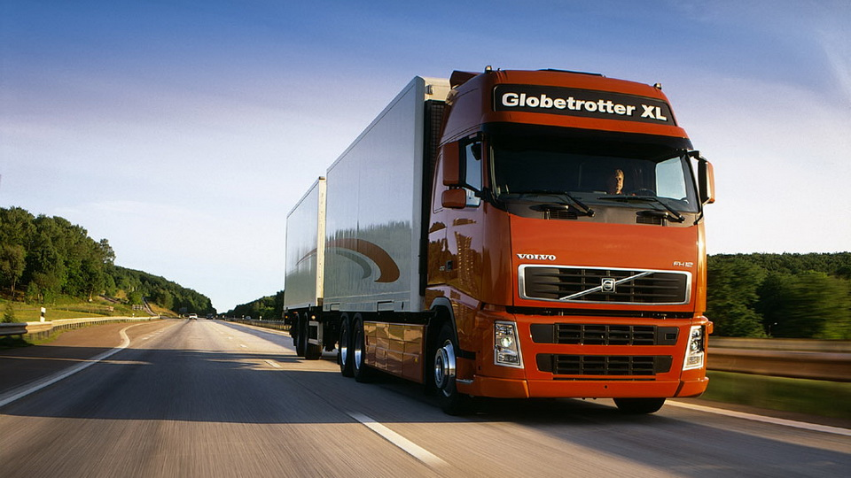
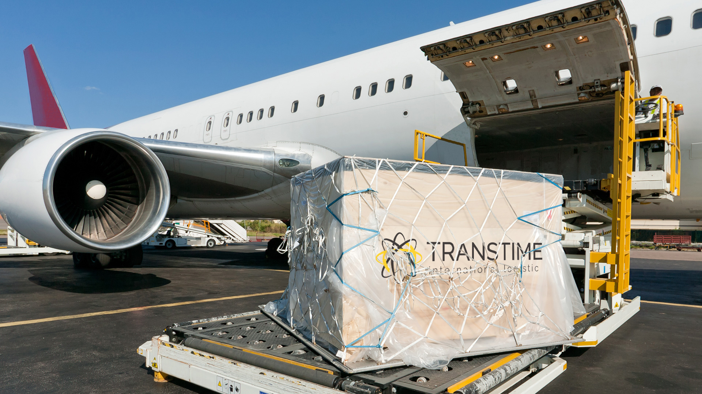
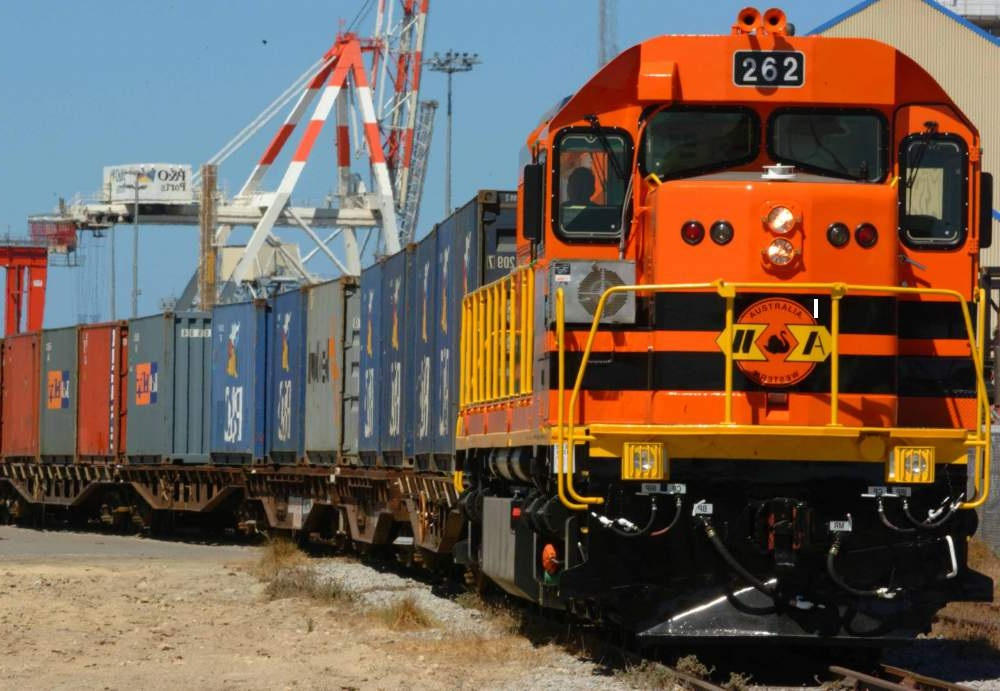
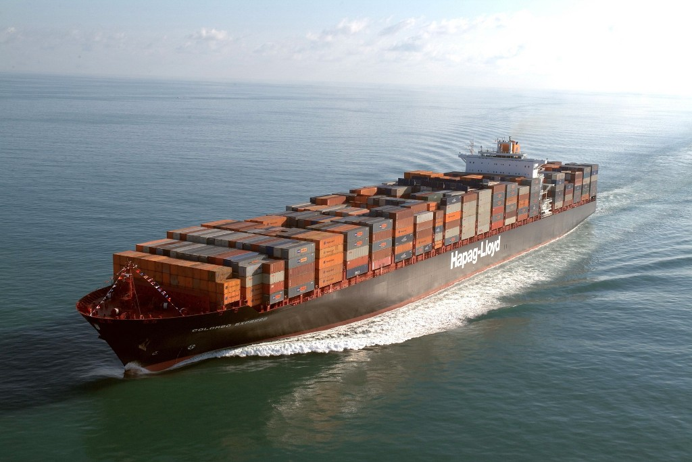

Получить описание
Типы перевозок
Авиаперевозки
Авиаперевозка грузов — это один из видов транспортировки отправлений, где в качестве средства доставки используется авиационный транспорт. Чаще всего это грузовые самолёты. Но в отдельные труднодоступные районы с ограниченным посадочным местом доставка может осуществляться с помощью вертолётов.
Железнодорожные перевозки
Железнодорожные перевозки — это вид услуги, оказываемой транспортными компаниями, которая подразумевает перевозку грузов при помощи подвижного состава по железным дорогам.
Перевозка фурой
Перевозка фурами — один из вариантов грузоперевозок, который предполагает использование в качестве транспорта крупнотоннажных грузовиков с закрытым кузовом.
Слово «фура» — заимствованное из немецкого языка. Fuhre означает длинную крытую повозку для клади.
Экспресс-доставка
Курьерская доставка — один из видов услуг, оказываемых транспортными или почтовыми компаниями, при которой товар доставляется или забирается по конкретному адресу специальным сотрудником (курьером).
Под курьерской службой чаще всего понимают доставку небольших отправлений, которые вручаются по месту назначения представителем службы.
Негабаритный груз
Крупногабаритный, он же негабаритный груз — это такой груз, размеры и/или вес которого не вписываются в установленные нормы.
Несмотря на то, что негабаритные перевозки возможны на водном, железнодорожном или автомобильном транспорте, термин чаще всего применяется к последним, так как именно здесь возникает больше всего сложностей.
Контейнерные перевозки
Контейнерные перевозки — это такой вид транспортировки грузов, где в качестве единицы, с которой производятся операции погрузки, приёмки и перевози, выбраны стандартные контейнеры. Такой подход позволяет существенно экономить время и сокращать объём операций при перевозке одного груза с привлечением разных видов транспортных средств.
Рефрижераторные перевозки
Рефрижераторные перевозки или перевозки грузов с температурным режимом — это вид услуги, оказываемой транспортными компаниями, при которых для товаров/грузов соблюдаются особенные требования по температурному режиму в процессе транспортирования.
Опасные грузы
Перевозка опасных грузов — это услуга, оказываемая транспортными компаниями, которая подразумевает перемещение различного рода веществ и материалов, которые в результате возможной аварии могут нанести ущерб окружающей природе или угрожать жизни людей.
Сборный груз
Доставка сборных грузов — это услуга, оказываемая транспортными компаниями (ТК), которая подразумевает объединение отправлений от нескольких клиентов для доставки их на одном транспорте, в одном и том же направлении.
Ответсвенное хранение
Термин «ответственное хранение» имеет несколько определений. Для бизнеса будут актуальны следующие:
- Обязанность хранения груза до решения ситуации, в случае если клиент не забрал свой товар;
- Услуга приёмки, хранения, контроля качества, передачи на доставку и другие действия, которая позволяет избежать расходов на содержание складов.
Морские перевозки
Морские перевозки — это услуга, оказываемая транспортными компаниями, которая подразумевает перемещение грузов на значительные расстояния с помощью морского транспорта.
Основное назначение морских перевозок — работа с крупными объёмами поставок в мировом масштабе (между континентами), поэтому международное законодательство, регламентирующее эту сферу, хорошо проработано во многих странах, ведущих внешнеэкономическую деятельность.
Таможенное оформление
Таможенное оформление — это комплекс мероприятий по подготовке и предоставлению сопроводительных или иных документов, подтверждающих правомерность пересечения границы.
Цель таможенного контроля — проверка пересекающих границу государства транспортных средств и/или перевозимых грузов на предмет соответствия их действующим договорённостям между странами-участниками обмена и нормам законодательных актов, регламентирующих сферу таможенного регулирования.
ОСНОВНЫЕ ВИДЫ ТРАНСПОРТНЫХ УСЛУГ
- перевозка;
- выгрузка, погрузка, перегрузка и другие погрузочно-разгрузочные операции;
- хранение товаров;
- действия по подготовке транспорта к маршруту;
- аренда и прокат транспорта;
- экспедиционные услуги;
- ремонт транспорта;
- перегон транспорта к месту погрузки товара;
- любые дополнительные операции необходимые для перевозки грузов.
Кроме того, все перечисленное транспортные услуги могут быть качественно выполнены, если соблюдены все требования по маркетингу, бухгалтерскому сопровождению, страхованию и другим аспектам.

Автомобильный транспорт
Автомобильный транспорт — вид транспорта, осуществляющего перевозки грузов и пассажиров на автомобилях (грузовых, легковых, автобусах, автотягачах и прицепных повозках). Играет неоправданно скромную роль и в грузовых и пассажирских перевозках современной России.
Суровые климатические условия, вызывающие большие, чем в других развитых странах, затраты на дорожное строительство, эксплуатацию дорог и автотранспорта, лишь частичное объяснение этому. Ведь даже в обжитых, экономически развитых регионах России автотранспорт развит слабо, и до сих пор главным “камнем преткновения” на пути развития отечественного автотранспорта является бездорожье.
...
Занимая первое место в мире по площади своей территории, Россия по средней плотности автодорог уступает не только высокоразвитым, но и большинству развивающихся стран. Общая протяженность в России автодорог с твердым покрытием в конце 1996 г. составляла всего 745 тыс. км, причем в подавляющем своем большинстве даже эти дороги не соответствовали общепринятым мировым стандартам.
Несмотря на высокие удельные затраты на перевозку грузов, автотранспорт более мобилен, чем другие виды транспорта, и позволяет осуществлять доставку грузов “от двери до двери”, что является неоспоримым его преимуществом. Пассажирский автотранспорт, помимо высокой мобильности и скорости сообщения, обладает и большим комфортом для пассажиров. Наиболее эффективной сферой использования автомобильного транспорта являются короткопробежные перевозки. Средняя дальность перевозки 1 т груза - 20—24 км. В этой связи доля автомобильного транспорта в суммарном грузообороте составляет около 6 %.
Большая мобильность, удобство перемещения и способность быстро реагировать на изменения спроса пассажиров позволяют автотранспорту часто быть вне конкуренции при пассажирских перевозках на местных линиях. Средняя дальность поездки одного пассажира составляет 9 км. Автобусы перевозят более 60 % пассажиров во многих городах России, а в некоторых из них и в сельской местности — 100 %.
К недостаткам автомобильного транспорта можно отнести: высокую себестоимость перевозок (в десятки раз выше, чем на железнодорожном); высокий уровень загрязнения окружающей среды; большую трудоемкость (на автотранспорте занято 3/4 всех работающих на транспорте), низкий уровень производительности труда вследствие малой средней грузоподъемности автомобилей; большие металлоемкость и энергоемкость.
Автомобильный транспорт обеспечивает главным образом внутрирайонные перевозки грузов и пассажиров, осуществляет централизованные перевозки от железнодорожных станций и портов и обратно. Действующую сеть автомобильных дорог по техническим и качественным характеристикам (согласно СНиП 2.05.02-85) делят на пять категорий или классов. По народнохозяйственному и административному значению автодороги 1-й и частично 2-й категорий называют федеральными, или магистральными общегосударственного значения, 2-й и частично 1-й категории — республиканскими, областными или краевыми, 3-й и 4-й категорий — местными и 5-й категории — сельскими.
Для эффективного использования автомобильного транспорта в России необходимо значительное увеличение дорог 1-й и 2-й категорий, так называемых автобанов с соответствующим оборудованием: станциями заправки автомобилей и технического обслуживания, демпингами, дорожными гостиницами, специальными стоянками, пересечениями в разных уровнях, освещением, дорожными знаками, автомобильными мойками, пунктами медицинского обслуживания и другими необходимыми учреждениями.

Воздушный транспорт
Воздушный транспорт — самый скоростной и в то же время самый дорогой вид транспорта, что предопределило его весьма ограниченное применение для грузоперевозок. В основном этим видом транспорта перевозятся дорогие, скоропортящиеся грузы. И прогнозы, которые делались в 60-х гг. о том, что перевозки грузов воздушным транспортом приобретут преимущественное значение, пока не оправдываются. Гораздо большую роль играет авиасообщение в дальних пассажирских перевозках. ... В современном мире, в то время, когда путешествия людей по планете приобрели масштабный характер, существенно возросла роль воздушного транспорта как наиболее быстрого средства перемещения на большие расстояния. Особенно велико значение воздушных перевозок в реализации массового туризма. Его бурное развитие в середине прошлого века потребовало создания самолетов, отвечающих различным целям путешествий и имеющих высокий уровень комфорта. На борту воздушных судов и в аэропортах пассажирам предлагается разнообразный и совершенный сервис, делающий путешествия приятными и доступными широким слоям населения.
Показать

Железнодорожный транспорт
Железнодорожный транспорт — вид транспорта, осуществляющий перевозки грузов и пассажиров по рельсовым путям помощью механической тяги (тепловозов, электровозов, паровозов) и являющийся в современной России основным.
Следует напомнить, что туризм начал развиваться именно на железной дороге, когда 5 июля 1841 г. английский предприниматель Томас Кук организовал путешествие для 570 человек по железной дороге в поезде. Проведение структурной реформы на железнодорожном транспорте предусматривает введение новых дополнительных видов деятельности, связанных с обслуживанием пассажиров.
...
Основные показатели работы железнодорожного транспорта можно разделить на общие для всех видов транспорта и специфические. К общим показателям относятся: объем перевозок (отправление) грузов и пассажиров, грузооборот и пассажирооборот, средняя дальность перевозки 1 т груза и I пассажира, приведенные тонно-километры.
К специфическим количественным и качественным показателям работы железных дорог относятся, в частности, показатели объема перевозок грузов железной дорогой по видам сообщений: ввоз, вывоз, транзит и местное сообщение. Ввоз — это объем прибытия грузов с других дорог для выгрузки на данной дороге. Вывоз — это объем отправления грузов, погруженных на данной дороге назначением на другие дороги. Транзитом называются перевозки грузов, станции отправления и назначения которых расположены за пределами рассматриваемой дороги и которые следуют через станции этой дороги. Местное сообщение включает в себя объем перевозок грузов, погруженных и отправленных назначением на станции одной и той же дороги.
Кроме этих объемных показателей, на железных дорогах определяют и обобщенные показатели приема, сдачи, отправления и прибытия грузов. Прием грузов с других дорог равен сумме ввоза и транзита, а сдача грузов на другие дороги равна сумме вывоза и транзита. Отправление грузов по дороге равно сумме вывоза и местного сообщения, а прибытие (выгрузка) — сумме ввоза и местного сообщения.
Перевозка багажа осуществляется в багажных вагонах. Единицей наблюдения является багажная отправка; первичным документом — корешок багажной квитанции, в которой регистрируются дата приема, станция и дорога отправления и назначения, масса отправки, провозная плата.
Перевозка пассажиров проводится по пассажирским билетам, и с тем уровнем комфорта и предоставляемого, который подходит конкретному потребителю.

Водный транспорт
Речной и морской сами по себе уже вызывают образ туристского - круизного обслуживания и используются в туризме достаточно активно. Водные путешествия имеют ряд как преимуществ, так и недостатков по сравнению с другими видами транспорта. Наиболее значимыми преимуществами являются высокий уровень комфорта, большой объем единовременной загрузки, возможности реализации различных видов и целей туризма (познавательный, бизнес-туризм, учебный, шоп-туризм и др.), полноценного отдыха, полный комплекс жизнеобеспечения. Основными недостатками можно назвать невысокую скорость передвижения транспортных средств, высокие тарифы, ограничение мобильности, а зачастую и подверженность части людей «морской болезни» на морских круизах, зависимость от географических особенностей и метеоусловий (течения, ветры, продолжительность навигационного периода); значительные капиталовложения в портовое хозяйство и транспортный флот. В условиях потери Россией многих крупных морских портов и экономического кризиса последнее обстоятельство затрудняет расширение берегового хозяйства отрасли, а также замену списанного флота.
...
Морской транспорт — один из старейших видов транспорта, использующий для массовой перевозки грузов и пассажиров преимущества дешевого естественного водного пути (океаны, моря и морские каналы). Этот вид транспорта выполняет следующие три функции. Во-первых, он обеспечивает морские международные связи страны. Грузовая работа в заграничном плавании складывается из перевозок грузов российского экспорта и импорта, доставка которых по условиям внешнеторговых сделок является обязанностью российской стороны.
При всей важности морского транспорта для экономики страны доля его в объеме перевозок грузов составила в 2001 году всего 0,6 %, а в грузообороте — 7,9 %.
Наибольшая доля в объеме перевозок (две трети) и грузообороте морского транспорта (более 90%) приходится на международные сообщения.
Речной транспорт — вид транспорта, осуществляющий перевозки грузов и пассажиров по внутренним естественным (реки, озера) и искусственным (каналы, водохранилища и шлюзованные участки рек) водным путям. Речной транспорт исторически занимает одно из ведущих мест в обслуживании крупных промышленных центров приречных районов. Особенно велико значение речного транспорта для северных и восточных районов страны, где сеть железных дорог недостаточна, а густота сети внутренних водных путей в 2 раза превышает аналогичный показатель в среднем по Российской Федерации. Поэтому доля речного транспорта в общем грузообороте этих районов составляет от 65 до 90%, тогда как в целом по России этот показатель в 2001 г. составил всего 3,3 %.
Помимо транспортного обслуживания районов Сибири и Дальнего Востока, включая Арктику, речной транспорт также выполняет сложные дорогостоящие перевозки по малым рекам в труднодоступных районах, а также высокорентабельные перевозки внешнеторговых грузов судами смешанного (река—море) плавания. Речной флот Российской Федерации обслуживает 68 республик, краев, областей и национальных округов. Протяженность внутренних водных судоходных путей составила в 2001г. 85,4 тыс. км, при этом на 50% их длины гарантируется определенная глубина в течение навигации. Протяженность внутренних водных судоходных путей Тюменской области составила в 2002 г. 9,8 тыс. км Так, в Европейской части России в результате строительства соединительных каналов (Беломорско-Балтийского, Волго-Балтийского, Волго-Донского) была ликвидирована территориальная разобщенность внутренних водных путей и создана единая глубоководная транспортная система, связавшая Белое, Балтийское, Каспийское, Азовское и Черное моря. Протяженность единой глубоководной системы (ЕГС) составляет 6,5 тыс. км, гарантированная глубина практически на всей ее протяженности составляет 4 м. На долю ЕГС приходится более половины грузооборота внутреннего водного транспорта.